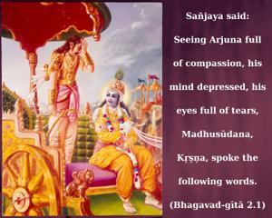

Sañjaya said: Seeing Arjuna full of compassion, his mind depressed, his eyes full of tears, Madhusūdana, Kṛṣṇa, spoke the following words.

Material compassion, lamentation and tears are all signs of ignorance of the real self. Compassion for the eternal soul is self-realization. The word “Madhusūdana” is significant in this verse. Lord Kṛṣṇa killed the demon Madhu, and now Arjuna wanted Kṛṣṇa to kill the demon of misunderstanding that had overtaken him in the discharge of his duty. No one knows where compassion should be applied. Compassion for the dress of a drowning man is senseless. A man fallen in the ocean of nescience cannot be saved simply by rescuing his outward dress – the gross material body. One who does not know this and laments for the outward dress is called a śūdra, or one who laments unnecessarily. Arjuna was a kṣatriya, and this conduct was not expected from him. Lord Kṛṣṇa, however, can dissipate the lamentation of the ignorant man, and for this purpose the Bhagavad-gītā was sung by Him. This chapter instructs us in self-realization by an analytical study of the material body and the spirit soul, as explained by the supreme authority, Lord Śrī Kṛṣṇa. This realization is possible when one works without attachment to fruitive results and is situated in the fixed conception of the real self.